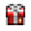
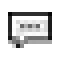

Events
King of the Hill, the Fallen Knight boss, loot drops and chat games: when they run and what you win.
When events happen
King of the Hill runs on a timer, and the Fallen Knight boss follows each round. The tip line at the top of your screen counts down to the next one, whichever comes first. You do not need to run any command.

Loot dropsItems fall from the sky every 15 minutes, at the PvP Arena or spawn.
Chat gamesA quick puzzle in chat about every 10 minutes, while 2 or more players are online.King of the Hill
Stand on the hill, stay closest to the centre and collect points. The player with the most points when the round ends wins.
- Where: Freeplay, from the warp menu. PvP is on around the hill.
- When: the first round starts 5 minutes after the server starts, then one round about every 30 minutes. Each round lasts 5 minutes. A round only starts if someone is online, and the clock pauses while the boss fight runs, so times can shift.
- Outside a round you cannot stand on the hill. You are sent back to Freeplay with KOTH isn't active right now.
- The start is announced with a goat horn and lightning, and the end names the winner and their points. If nobody is on the hill, there is no winner.
- Round length
- 5 minutes
- Gap
- 30 minutes between starts
- Hill radius
- 8 blocks
- Points
- 1 a second
Capturing
Every second, the single player closest to the centre of the hill, within 8 blocks, scores 1 point. To take over, stand closer than whoever holds it, or knock them off. Holding it for the whole 300 seconds earns 300 points.
Rewards
| Reward | Winner | Others with 30 or more points |
|---|---|---|
| Coins | 5,000 coins plus 100 coins per point, at least 1,000 coins and at most 30,000 coins | 2,000 coins |
| Balance bonus | 8% of your balance, up to 500,000 coins | None |
| Battle pass points | 500 | 100 |
| Keys | 1 Epic key | None |
| Stat | 1 King of the Hill win | None |
The coin part of the winner's prize reaches its cap of 30,000 coins from 250 points up. Other players need 30 or more points to be paid.
The balance bonus
The winner's bonus is a percentage of what is in your balance, up to 500,000 coins. It shrinks every time you win an event reward in the same day. Each King of the Hill win or boss reward takes 15 percentage points off the next bonus, so the bonus is paid at 100% of its value, then 85%, 70%, 55%, 40%, 25% and finally 10%. It resets at the daily server reset.
The Fallen Knight
The Fallen Knight is a boss that wakes at the PvP Arena, about 580 blocks from spawn. You can warp there from the warp menu. Everyone who fights it fights together, and full PvP still applies, so other players can attack you during the fight.
- When: 5 minutes after each King of the Hill round ends, so roughly every 30 minutes. It needs at least one player online and no King of the Hill running; if it cannot start it tries again every 2 minutes. A server restart cancels a booked boss, so the next one comes after the next King of the Hill round.
- The chat announces it with The Fallen Knight has awoken! and tells you to head to the PvP Arena.
- It targets players within 48 blocks and is kept within 45 blocks of the arena centre.
- It cannot be hurt by falling, lightning, drowning, suffocation or the void, and it takes no knockback.
Stages
| Stat | Stage one | Stage two (below 50% health) |
|---|---|---|
| Health | 2,500 (1,250 hearts) | The same pool |
| Melee damage | 10 | 16, plus Wither for 4 seconds |
| Speed | 0.26 | 0.40 |
| Size | Normal | 2.25 times bigger, with a burning stone skin |
| Damage taken from players | Full | About two thirds. It shrugs off 33% |
When it drops below half health, lightning strikes and the Knight roars. Four Fallen Archers appear, then two more every 30 seconds, with up to 6 alive at once. Each archer has 40 health. The Knight blinks next to the nearest player who is more than 8 blocks away about every 9 seconds, and the archers blink to about 11 blocks from a player every 16 seconds. Damage from archers and the environment does not count toward your share; ranged hits you land do.
How it ends
- Players kill it, and rewards are paid.
- The fight times out after 15 minutes without a kill.
- The Knight leaves after 3 minutes with no player hit.
- Staff can cancel it.
If it is not killed, it vanishes and nothing is paid.
Rewards
You must be online when it dies. The top damage player is paid, not the player who lands the last hit. To count as an assist, you need at least 5% of the total damage. The kill message names the top two damage dealers with their damage and share.
| Tier | Who | Coins | Balance bonus | Battle pass points | Keys |
|---|---|---|---|---|---|
| Top damage | Most damage dealt | 6,000 coins | 8% of your balance, up to 500,000 coins | 5,000 | 2 Mythic, 3 Epic |
| Boss assist | Everyone else with at least 5% of total damage | 2,500 coins | 5% of your balance, up to 500,000 coins | 2,000 | 1 Mythic, 1 Epic |
Balance bonuses shrink through the day the same way as King of the Hill, as described in the balance bonus section.
Eye of the Knight
There is a 1 in 3 chance that an Eye of the Knight drops where the Knight falls. It is a real item, so anyone nearby can grab it.
- Use it while a boss fight is running and the Knight takes 2 times player damage for the rest of the fight, stage two included. It is announced in chat.
- Eyes do not stack. A second one, or one used when no fight is running, is refused and is not used up.
- You can also get an Eye from an Epic crate or a Mythic crate, and from drop parties. See crates.
Loot drops and drop parties
Every 15 minutes the server drops loot, switching between the PvP Arena and spawn. 6 to 10 items land 15 to 20 blocks from the centre. Chat says A loot drop has landed in the arena. go grab it! or at spawn.
Anything in this list can fall. Keys and hearts are the most common finds, and spawners are very rare.
- Common keys (2 or 3), Epic keys (1 or 2), or a Mythic key.
- 1 or 2 hearts. See lifesteal.
- 2 enchanted golden apples, or a Totem of Undying.
- A pig, cow, skeleton, zombie, blaze or creeper spawner. See spawners.
The arena loot is PvP territory, so expect company. At spawn nobody can be hurt.
Drop parties
Staff can start a drop party at spawn. 200 to 300 items rain down within 6 to 18 blocks of the spawn point over 60 seconds, and chat says A drop party has started at spawn!. It can include enchanted books, crate items, keys and goodie bags, with no more than one heart per drop.
Chat games
A chat game is a quick puzzle posted in chat. The first player to type the right answer in chat wins. Nobody needs to go anywhere or run a command.
- When: the first game comes 3 minutes after the server starts, then the next one 10 minutes after each game ends. Games only start while 2 or more players are online.
- You have 60 seconds to answer. If nobody gets it, chat shows the answer and the next game is 10 minutes away.
- Capitals, punctuation and extra spaces do not matter. A wrong guess shows in chat like any other message; the right answer is hidden and the winner is announced with how fast they were.
- Your answer is a normal chat message, so you cannot answer while you are muted.
- Gap
- 10 minutes after each game
- Time to answer
- 60 seconds
- Players needed
- 2 online
- Prize
- 150 to 400 coins and 25 battle pass points
The six games
Each game is picked at random.
| Game | What you do |
|---|---|
| Unscramble | Put the letters of a scrambled word back in order. |
| Fast Type | Type the phrase shown, exactly. |
| Quick Maths | Solve a sum: an addition, a subtraction or a times table up to 12 x 12. |
| Backwards | Type the word shown backwards. |
| Fill the Gaps | Fill in the missing letters of a word. The first letter is always shown. |
| Trivia | Answer a Minecraft question. Common spellings and plurals are accepted. |
The words are Minecraft and CrabSMP words, such as mobs, blocks and items.
The chat games menu
Type to open the menu. It shows the game that is running and how long is left, or how long until the next one, the prize and how many chat games you have won. While a game is running, Show the Question repeats it in your chat.
Hide chat games
Turn off Chat Games under Notifications in to stop seeing them. You can still answer one if you see it.